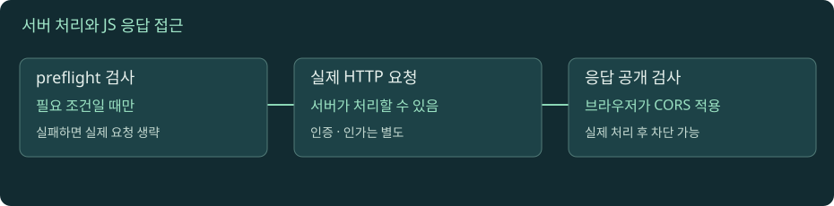

브라우저 보안: 출처·쿠키·CORS
서버가 요청을 처리할 수 있는지, 쿠키가 실리는지, 자바스크립트가 응답을 읽을 수 있는지는 서로 다른 결정이다.

CORS는 어디에서 차단할까?
자바스크립트를 켜면 실험을 조작할 수 있습니다. 아래 본문·도식·실습은 그대로 읽을 수 있습니다.
01. 01 · origin과 site를 같은 말로 쓰지 않기
브라우저의 일반적인 origin은 스킴·호스트·포트의 조합이다. https://app.example.test와 https://api.example.test는 호스트가 달라 다른 origin이다. https://app.example.test:8443도 포트가 달라 다른 origin이다. 경로 /a와 /b의 차이는 origin을 바꾸지 않는다. 기본 포트의 정규화와 opaque origin 같은 세부 규칙은 HTML 표준의 origin 모델에 정의된다.
site는 일반적인 HTTP(S) 호스트 이름의 경우 스킴과 등록 가능한 도메인에 기반한 더 넓은 경계다. app.example.test와 api.example.test가 같은 스킴이면 same-site이면서 cross-origin일 수 있다. 다만 등록 가능한 도메인은 단순히 맨 뒤 두 레이블로 자르는 것이 아니다. co.uk처럼 공용 접미사 규칙이 있어서 Public Suffix List의 경계가 중요하다. IP 주소·localhost·opaque origin에는 별도 고려가 있다.
왜 둘을 구분할까? CORS는 origin 사이 응답 읽기 허용을 다루고 SameSite 쿠키 정책은 site 관계를 활용한다. API가 same-site라고 해서 CORS 설정이 필요 없다는 결론은 틀릴 수 있다. 교육용 표에 스킴·호스트·포트를 각각 써 보면 두 경계가 어느 단계에서 달라지는지 명확해진다.
02. 02 · 쿠키는 서버가 심고 브라우저가 조건에 맞춰 보낸다
서버의 응답 헤더 Set-Cookie는 브라우저에게 쿠키 저장을 요청한다. 이후 브라우저는 대상 도메인·경로·보안·SameSite·자격 증명 모드와 자체 정책을 평가해 Cookie 요청 헤더를 생성할 수 있다. 모든 쿠키를 모든 요청에 싣는 것이 아니며 저장 성공과 이후 전송 성공도 다르다.
교육용 예시를 보자.
Set-Cookie: session=opaque-id; Path=/; Secure; HttpOnly; SameSite=LaxDomain을 생략하면 일반적으로 응답 호스트에 묶이는 host-only 쿠키다. Domain을 지정해 유효한 부모 범위를 사용하면 하위 호스트에 대한 전송 범위가 달라질 수 있다. Path는 전송 경로를 좁히는 조건이지만 다른 경로의 스크립트로부터 강한 보안 격리를 제공하는 경계로 사용하지 않는다. 저장·삭제·범위 개념은 HTTP 쿠키 안내를 참고한다.
쿠키 값이 세션 식별자라면 서버는 저장소에서 세션을 조회할 수 있다. 브라우저가 서명된 값이나 불투명 ID를 갖는 것과 사용 권한의 최종 검사는 별개다. 세션 만료, 로그아웃, 권한 변경은 서버 계약도 필요하다. 쿠키가 전송됐다는 이유만으로 현재 유효한 로그인이라고 보고하지 않는다.
03. 03 · Secure, HttpOnly, SameSite가 막는 대상이 다르다
Secure는 일반적으로 HTTPS 같은 보안 전송에만 쿠키를 보내도록 제한한다. HttpOnly는 document.cookie 같은 스크립트 인터페이스에서 쿠키를 읽지 못하게 한다. HttpOnly 쿠키도 조건에 맞으면 브라우저의 HTTP 요청에는 실릴 수 있다. 따라서 HttpOnly를 '자바스크립트가 발생시킨 요청에는 쿠키가 없다'고 해석하지 않는다.
SameSite=Strict, Lax, None은 교차 사이트 맥락의 전송 조건을 달리한다. Lax에는 일반적으로 안전한 메서드의 최상위 탐색 같은 허용 맥락이 있고, None은 Secure를 요구한다. 기본값 처리나 제3자 쿠키 차단은 브라우저 정책에도 영향을 받는다. 'SameSite=None이면 모든 브라우저의 모든 상황에서 쿠키가 반드시 실린다'는 보장은 없다. 속성 설명은 Set-Cookie 문서를 참고한다.
속성을 서로 대체재로 보면 안 된다. Secure가 스크립트 접근을 막지 않고, HttpOnly가 CSRF를 완전히 막지 않으며, SameSite가 서버의 권한 검사를 대신하지 않는다. 공격자가 페이지에서 코드를 실행할 수 있다면 쿠키 값을 읽지 못해도 사용자의 권한으로 요청을 보낼 수 있다. 각 보호를 어떤 공격 경로에 적용하는지 구분하자.
04. 04 · same-origin policy와 CORS는 응답 읽기 경계다
same-origin policy는 다른 출처의 문서나 데이터에 대한 스크립트 접근을 제한한다. CORS는 서버가 특정 교차 출처 요청의 응답을 브라우저 스크립트에 노출해도 되는지 표현하는 프로토콜이다. 인터넷 방화벽처럼 모든 요청 패킷이 서버로 가는 것을 막는 장치가 아니다. curl이나 서버 간 HTTP 클라이언트는 브라우저의 같은 정책을 그대로 집행하지 않는다.
중요한 시간차가 있다. 사전 검사가 필요하지 않은 교차 출처 요청은 실제 서버에 도착해 처리된 뒤 응답이 스크립트에 노출되지 않을 수 있다. 개발자는 콘솔의 CORS 오류만 보고 '서버는 요청을 받지 않았다'고 결론 내리면 안 된다. 반대로 preflight가 필요한 요청은 사전 검사가 실패하면 실제 요청이 전송되지 않을 수 있다. MDN CORS 안내는 두 경로를 구분해 설명한다.
예를 들어 로그인 쿠키가 붙는 폼 요청을 서버가 처리했다면 공격자가 응답을 읽지 못하더라도 상태 변경은 발생했을 수 있다. 그러므로 CORS는 인증과 권한 검사를 대신하지 않는다. 서버는 누가 어떤 작업을 요청할 수 있는지 독립적으로 검사해야 하고 상태 변경 요청에는 CSRF 위험도 따로 다뤄야 한다.
05. 05 · preflight: 실제 요청을 보내기 전의 허용 확인
브라우저는 교차 출처 요청의 메서드와 헤더 등이 CORS의 safelist 조건을 벗어나면 보통 OPTIONS 사전 요청을 보낸다. 예를 들어 JSON Content-Type의 POST나 Authorization 같은 헤더는 preflight가 필요한 대표 상황이다. GET이라도 헤더에 따라 사전 검사가 생길 수 있으므로 메서드만 보고 판단하지 않는다.
교육용 사전 요청을 읽자.
OPTIONS /orders HTTP/1.1
Origin: https://app.example.test
Access-Control-Request-Method: POST
Access-Control-Request-Headers: content-type서버의 허용 응답은 Origin·메서드·헤더 조건과 맞아야 한다. OPTIONS가 200이라는 사실만으로 모든 검사가 성공하는 것은 아니다. 허용 헤더가 없거나 요청 조건과 다르면 실제 요청이 막힐 수 있다. preflight는 보통 자격 증명 없이 수행되므로 인증 미들웨어가 OPTIONS를 일괄 거부하는 구성도 점검한다. 세부 알고리즘은 WHATWG Fetch를 따른다.
성공한 preflight 결과는 별도의 캐시에 남을 수 있다. 그래서 같은 요청을 연속 실행해도 항상 OPTIONS가 다시 보이지 않을 수 있다. 일반 HTTP 응답 캐시와 preflight 캐시는 역할이 다르다. 실제 응답에서도 CORS 조건 검사가 필요하므로 'OPTIONS가 성공했으니 어떤 응답이 와도 스크립트가 읽는다'고 가정하지 않는다.
06. 06 · credentials와 정확한 Origin 허용
브라우저 fetch의 credentials 모드는 쿠키 같은 자격 증명 취급에 영향을 준다. 교차 출처 요청에서 쿠키를 포함하려면 상황에 맞는 credentials 설정이 필요하며, 쿠키 자체의 Domain·SameSite·Secure 조건과 브라우저 정책도 통과해야 한다. include를 켰다는 사실만으로 실제 Cookie 헤더 전송이 보장되지 않는다.
자격 증명을 포함하는 CORS 응답을 허용하려면 서버는 특정 Origin과 Access-Control-Allow-Credentials: true 같은 조건을 맞춰야 한다. 이때 Access-Control-Allow-Origin: *를 특정 출처 허용 대신 사용할 수 없다. 요청 Origin을 검증 없이 그대로 반사하는 것도 안전한 허용 목록이 아니다. 서버가 신뢰하는 출처 집합을 검사하고, 캐시될 수 있는 동적 허용 응답에는 Origin 변형을 고려한다.
세 가지 점검표를 만든다. 1번, 브라우저가 쿠키를 저장했는가? 2번, 실제 요청에 쿠키가 실렸는가? 3번, 응답이 스크립트에 노출됐는가? 이 셋은 각각 저장 정책, 전송 조건, CORS에 의해 다르게 실패할 수 있다. 개발자 도구의 Storage·Network·Console을 함께 보면 '쿠키가 안 된다'는 신고를 더 작은 문제로 분해할 수 있다.
07. 07 · CORS가 CSRF 방어를 완성하지 않는 이유
CSRF는 사용자의 브라우저가 가진 자격 증명을 이용해 의도하지 않은 요청을 서버에 수행시키는 공격이다. 공격자가 응답 본문을 읽어야만 성공하는 공격이 아니다. 사용자의 송금 요청이 실행된 뒤 응답 읽기가 막혀도 상태 변경은 이미 발생했을 수 있다. 따라서 CORS 오류를 CSRF 차단 증거로 보고하지 않는다.
서버 측 CSRF 토큰 검증, Origin·Referer 검토, SameSite 쿠키 정책, 상태 변경에 적절한 메서드 사용을 상황에 맞게 결합한다. 토큰 방식의 세부 설계는 애플리케이션 구조에 달려 있으며 단순히 헤더 이름 하나를 추가하는 것으로 끝나지 않는다. XSS가 있으면 CSRF 방어의 전제도 흔들릴 수 있다. 공격과 보호 범위는 MDN CSRF 설명에서 확인한다.
직접 만든 결제 예시로 정리하자. 악성 사이트에서 결제 요청이 실행됐지만 CORS 때문에 JavaScript가 결과를 못 읽었다. 브라우저의 읽기 정책은 작동했으나 업무 보호는 실패했다. 반대로 사전 검사가 실패해 실제 JSON POST가 전송되지 않은 경우라면 해당 시도는 서버 업무까지 도착하지 않았을 수 있다. 로그의 메서드와 경로, OPTIONS와 실제 요청을 각각 확인해야 두 사건을 구분할 수 있다.
08. 08 · 브라우저 장애를 네트워크·정책·업무로 나눠 읽기
브라우저 화면이 데이터를 못 보여줄 때 가능한 원인은 다양하다. DNS가 실패했을 수도 있고 TLS 검증이 실패했을 수도 있다. 서버가 401을 반환했을 수도 있고, 200 응답이 왔지만 CORS 때문에 스크립트 접근만 막혔을 수도 있다. HTTP 응답을 관찰하기 전 단계의 실패와 응답 이후 정책 실패를 같은 'API 에러'로 기록하지 않는다.
개발자 도구에서 먼저 실제 요청이 있는지 본다. OPTIONS만 있으면 preflight 응답을 읽는다. 실제 요청도 있으면 상태·응답 헤더·Cookie 전송 여부·콘솔을 비교한다. 서버 로그에서 같은 요청 ID가 확인되면 실제 처리 단계도 추적할 수 있다. curl 성공은 서버가 해당 curl 요청에 응답했다는 근거이며 브라우저 CORS 설정이 정상이라는 증거는 아니다.
다른 웹 출처로 요청하는 예제를 file://에서 직접 열면 로컬 문서의 origin 규칙이 결과를 바꿀 수 있다. 이 장의 실습은 명시된 로컬 HTTP 서버에서 실행한다. 관찰 조건을 고정해야 학습이 된다. 또한 교재의 CORS 시뮬레이터는 표준의 대표 흐름을 설명하는 모델이다. 실제 브라우저의 네트워크 격리, 확장 프로그램, 정책 변경까지 재현하는 검증 도구는 아니다.
실습 · 서버는 응답했는데 브라우저는 읽지 못하는 경우
교재 폴더에서 python3 tools/lab_server.py를 실행하고 브라우저로 http://127.0.0.1:8765/를 연다. 로컬 실습 화면이 localhost의 같은 포트로 요청하는 경우 호스트가 달라 cross-origin이다. localhost 이름 해석이나 IPv6 우선순위로 연결이 실패하면 이를 CORS 오류와 구분한다.
- 개발자 도구의 Network와 Console을 연다. 실습 화면에서 허용 CORS 요청을 실행하고 서버가 제공한 응답을 확인한다. 요청 Origin과 Access-Control-Allow-Origin이 맞는지 읽는다.
- 차단 모드를 실행한다. 실제 GET이 서버에 도착해 응답했는지 Network와 서버 로그를 확인한다. 스크립트가 응답을 못 읽는 결과와 서버의 실제 요청 처리를 분리해 적는다.
curl -i -H 'Origin: http://127.0.0.1:8765' 'http://localhost:8765/cors?mode=deny'를 실행한다. curl이 응답을 표시하는 것은 브라우저 CORS 정책을 집행하지 않기 때문이다. 서버 인증 우회 성공으로 해석하지 않는다.curl -i -X OPTIONS -H 'Origin: http://127.0.0.1:8765' -H 'Access-Control-Request-Method: POST' -H 'Access-Control-Request-Headers: content-type' 'http://localhost:8765/cors?mode=allow'를 실행한다. 사전 요청의 응답 헤더를 읽는다. curl로 OPTIONS를 보낸 것 자체가 브라우저 자동 판정의 재현은 아니며 메시지 관찰 실습이다.- 브라우저 콘솔에서
fetch('http://localhost:8765/cors?mode=allow', {method:'POST', headers:{'Content-Type':'application/json'}, body:'{"study":true}'})를 실행한다. OPTIONS와 실제 POST를 각각 확인한다. 기존 preflight 캐시가 있으면 OPTIONS가 생략될 수 있다. - 같은 코드를 deny 모드로 실행하고 실제 POST가 있는지 확인한다. preflight 실패라면 실제 요청이 전송되지 않는 경로를 관찰할 수 있다. GET의 응답 읽기 차단과 비교한다.
- 마지막으로
origin 동일? / site 동일? / 쿠키 저장? / 전송? / preflight? / 실제 요청? / JS 응답 읽기?표를 채운다. 로컬 서버는 쿠키 보안의 모든 조건을 재현하지 않으므로 Secure·SameSite 쿠키 전송은 별도 HTTPS 환경에서 검증해야 함을 적는다.
끝나면 Ctrl+C로 실습 서버를 종료한다. 외부 서비스에 자격 증명을 보내거나 브라우저 보안 기능을 끄지 않는다.
로컬 실습 서버 실행과 공통 명령은 실습 안내에서 확인하세요. 실제 HTTPS·HTTP/2·HTTP/3 서버를 제공하는 실습은 아닙니다.
이해도 확인
선택 후 이유를 설명하고 정답을 확인하세요.
원전과 더 읽을 자료
표준과 공식 문서를 참고해 독립적으로 구성한 학습 설명입니다. 예시 결과와 시간은 명시한 경우를 제외하면 교육용입니다. 확인 기준: 2026-11-09.
진행률은 현재 브라우저에 저장됩니다. 파일 직접 열기와 HTTP 접속은 저장 공간이 다를 수 있습니다.